Віджет Canvas – клас полотна для малювання. Клас Canvas створює полотна, на яких можна розміщувати різні фігури. Це робиться за допомогою виклику відповідних методів. Під час розміщення геометричних примітивів вказуються їхні координати на холсті. Точкою відліку є лівий верхній кут. Координати задаються у вигляді кортежу (x, y), де x – це відстань від лівого краю полотна, а y – це відстань від верхнього краю полотна. Віджет Canvas також підтримує розміщення зображень та тексту, що робить його дуже гнучким для створення різноманітних графічних інтерфейсів та візуалізацій.
Загальний синтаксис:
name = Canvas(window, options)
де, name – ім'я полотна, window – ім'я вікна, на якому розташовується полотно, options – параметри полотна.
Властивості Canvas:
| Властивість | Значення |
|---|---|
| width | Ширина полотна для малювання в пікселях. |
| height | Висота полотна для малювання. |
| background (bg) | Колір фону полотна для малювання. |
| borderwidth (bd) | Ширина рамки навколо полотна в пікселях. |
| state | Стан полотна для малювання. Може мати значення: "normal" або "disabled". |
| highlightcolor | Колір межі полотна, коли на ній малюють. |
| highlightthickness | Ширина межі полотна, коли на ній малюють, в пікселях. |
| scrollregion | Визначає область прокрутки для полотна, задаючи координати у вигляді кортежу (x1, y1, x2, y2). |
| xscrollcommand | Вказує функцію, яка буде викликатися при прокручуванні полотна по горизонталі. |
| yscrollcommand | Вказує функцію, яка буде викликатися при прокручуванні полотна по вертикалі. |
Ці властивості дозволяють вам налаштовувати зовнішній вигляд та поведінку полотна для малювання. Наприклад, ви можете встановити ширину та висоту полотна, змінити колір фону, додати рамку навколо полотна або визначити область прокрутки для великого полотна.
Методи Canvas:
Методи класу Canvas дозволяють вам створювати різні графічні примітиви, такі як лінії, прямокутники, кола, текст та зображення. Ви можете використовувати ці методи для малювання на полотні та створення складних графічних інтерфейсів.
| Метод | Опис |
|---|---|
| create_line(x1, y1, x2, y2, **options) | Створює лінію на полотні. |
| create_rectangle(x1, y1, x2, y2, **options) | Створює прямокутник на полотні. |
| create_oval(x1, y1, x2, y2, **options) | Створює коло на полотні. |
| create_polygon(points, **options) | Створює багатокутник на полотні. |
| create_arc(x1, y1, x2, y2, start, extent, **options) | Створює дугу на полотні. |
| create_text(x, y, text, **options) | Створює текст на полотні. |
| create_image(x, y, image, **options) | Створює зображення на полотні. |
| delete(item) | Видаляє елемент з полотна за його ідентифікатором. |
| move(item, dx, dy) | Переміщує елемент на полотні на задану кількість пікселів по горизонталі (dx) та вертикалі (dy). |
| coords(item, x1, y1, x2, y2) | Змінює координати елемента на полотні. |
| itemconfig(item, **options) | Змінює параметри елемента на полотні. |
Ці методи дозволяють вам створювати різноманітні графічні елементи на полотні та керувати їхньою поведінкою. Ви можете малювати лінії, прямокутники, кола, текст та зображення, а також видаляти або переміщувати ці елементи за потребою.
Система координат Canvas:
Система координат в Canvas є двовимірною, де точка (0, 0) знаходиться у верхньому лівому куті полотна. Координата x збільшується вправо, а координата y збільшується вниз. Це означає, що якщо ви хочете намалювати елемент у центрі полотна, вам потрібно буде використовувати координати, які відповідають половині ширини та висоти полотна.
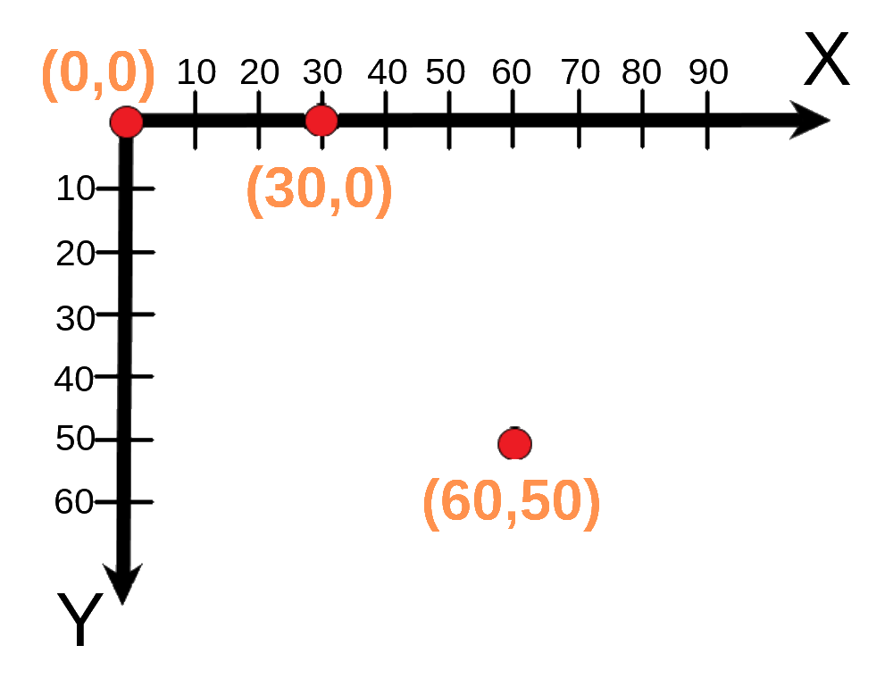
Наприклад, якщо ваше полотно має ширину 400 пікселів і висоту 300 пікселів, то центр полотна буде знаходитися в точці (200, 150). Якщо ви хочете намалювати лінію від верхнього лівого кута до центру полотна, ви можете використовувати метод create_line(0, 0, 200, 150).
1. Створимо дві лінії, одну чорну суцільну, другу оранжеву пунктирну на кінці із стрілкою. Для виконання даного завдання використовуємо метод create_line() класу Canvas. Параметри методу дозволяють нам налаштувати колір, товщину, тип лінії та додати стрілки на кінцях.
from tkinter import *
root = Tk()
c = Canvas(root, width=200, height=200)
c.pack()
c.create_line(15, 10, 180, 100, fill='gray24')
c.create_line(50, 180, 170, 120, fill='coral', width=5, dash=(10, 2),activefill='yellow', arrow=LAST, arrowshape="10 30 10")
root.mainloop()
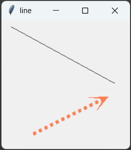
2. Створимо прямокутник та квадрат. Для цього використаємо метод create_rectangle() класу Canvas. При наведенні курсора на квадрат рамка навколо нього змінюватиме свій тип на пунктирну, а колір квадрата змінюватиметься на жовтий. Це досягається за допомогою параметрів activedash який визначає тип рамки, та activefill, який визначає колір заливки елемента, коли він активний (наприклад, при наведенні курсора).
from tkinter import *
root = Tk()
c = Canvas(root, width=200, height=200).pack()
c.create_rectangle(10, 10, 100, 190, fill="#ff8c00")
c.create_rectangle(120, 50, 190, 120, fill='light green', outline='cadet blue', width=4, activedash=(5, 4), activefill="gold")
root.mainloop()
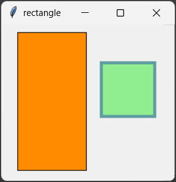
3. Створимо овал та коло. Для цього використаємо метод create_oval() класу Canvas. Параметри методу дозволяють нам налаштувати колір заливки та колір контуру для створених фігур. У першому випадку ми створимо овал з блакитною заливкою, а у другому випадку створимо коло з жовтою заливкою та помаранчевим контуром.
from tkinter import *
root = Tk()
root.title("oval")
c = Canvas(root, width=200, height=220)
c.pack()
c.create_oval(10, 10, 190, 100, fill="light green")
c.create_oval(50, 110, 150, 210, width=10, fill='khaki', outline='#ff8c00')
root.mainloop()
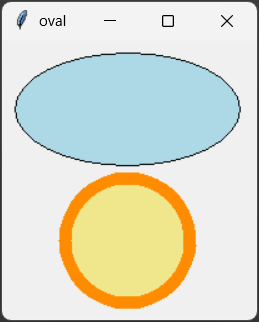
4. Створимо трикутник. Для цього використаємо метод create_polygon() класу Canvas. У цьому випадку ми створимо трикутник з оранжевою заливкою та графітовим контуром.
from tkinter import *
root = Tk()
root.title("triangle")
c = Canvas(root, width=220, height=220)
c.pack()
c.create_polygon(160, 10, 20, 180, 180, 90, fill='#ff8c00', outline='#333333', width=1)
root.mainloop()
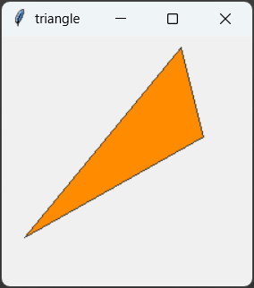
5. Створимо зірку. Для цього використаємо метод create_polygon() класу Canvas. У цьому випадку ми створимо восьмикутну зірку, задаючи координати її вершин у вигляді кортежу. Колір заливки буде салатовим, а колір контуру – оранжевим.
from tkinter import *
root = Tk()
root.title("star")
c = Canvas(root, width=210,height=210)
c.pack()
points = [5,105, 43,80, 30, 30, 80, 43, 105, 5, 130, 43, 180, 30, 162, 80, 205, 105, 162, 130, 180, 180, 130, 162, 105, 205, 80, 162, 30, 180, 43, 130]
c.create_polygon(points, outline='tan1', fill='lawn green', width=3)
root.mainloop()
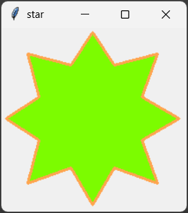
6. Створимо елементи круга. Для цього використаємо метод create_arc() класу Canvas. У цьому випадку ми створимо різнокольорові дуги, сектори та сегменти, задаючи координати їхньої обмежувальної рамки та кути початку та кінця дуги. Колір заливки та контурів буде різним, встановлювано за власним вподобанням.
from tkinter import *
root = Tk()
root.title("arc")
c = Canvas(root, width=200, height=200)
c.pack()
c.create_arc(10, 10, 190, 190, start=190, extent=40, fill='light blue')
c.create_arc(10, 10, 190, 190, start=80, extent=60, fill='coral')
c.create_arc(10, 10, 190, 190, start=0, extent=60, style=ARC, outline='green', width=5)
c.create_arc(10, 10, 190, 190, start=240, extent=100, style=CHORD, fill='darkgoldenrod1')
root.mainloop()
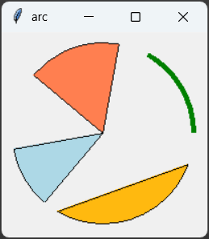
7. Створимо текстовий напис. Для цього використаємо метод create_text() класу Canvas. У цьому випадку ми створимо текст "Мені подобається Tkinter", задаючи координати його позиції та встановлюючи різні параметри форматування.
from tkinter import *
root = Tk()
root.title("text")
c = Canvas(root, width=250, height=160)
c.pack()
c.create_text(130, 70, text=f"Мені подобається\nTkinter!", justify=CENTER, font="Verdana 18", fill='#168A16')
root.mainloop()
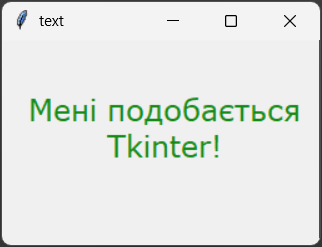
1. Створіть зображення за зразком використавши властивості та методи клаcу Canvas.
Зразок
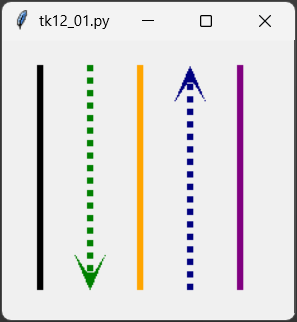
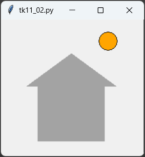
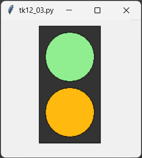
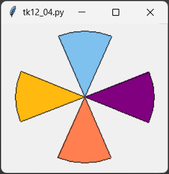
2. Створіть полотно, на яке додайте зображення використоуючи різні методи класу Canvas. На зображенні має бути представлено принаймні 5 різних графічних примітивів (лінія, прямокутник, коло, текст, зірка тощо) з різними параметрами форматування (колір, товщина, тип лінії тощо). Розмістіть кожен примітив на полотні так, щоб вони не перекривалися і були чітко видимими. Додайте підписи до кожного примітива, вказуючи його тип та основні параметри. Файл з кодом програми збережіть у власну папку з іменем tk_12_02.py.